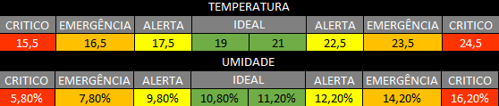
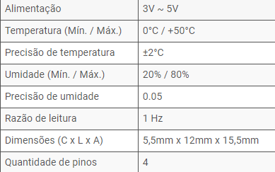

Quem somos e por que nos escolher?
O café é uma bebida que movemos os brasileiros, dando aquela energia extra para manter-se sempre ativo. Somos o segundo país onde uma população mais consome café, atrás apenas dos Estados Unidos. Não é a toa que a produção nacional de café tem crescido nas últimas décadas, com aumento expressivo no número de plantas a cada ano. O que faz com que a atividade da cafeicultura seja expressiva no país, tanto social quanto economicamente, gerando mais 8 milhões de empregos de forma direta e indireta e colocando o país no topo do ranking como o maior produtor e exportador de café do mundo.
A WeGrowffee monitora a temperatura e umidade em estufas de café, além de também controlar a irrigação de água dela, fazendo com que seu plantio tenha uma safra muito melhor do que tinha, assim também protegendo sua planta para que ela tenha sua eficiência ao máximo.
Para que tenhamos um controle dentro da estufa, será utilizado o sensor de temperatura e umidade DHT 11 e um sistema de irrigação chamado de gotejamento.
Nossa especialidade é o cultivo de café arábica, que para ter um ótimo desempenho, deve estar numa temperatura ambiente de 21ºC, tendo como margem de erro 1ºC. Em relação a umidade, o café arábica tem como um ideal de 10,8% a 11,2% para também ter um desempenho além do esperado.
Chegando acima de uma margem de 1,5 ° C, emite um alerta de instabilidade de temperatura, se a margem aumentar para 2,5 ° C o sistema já indica que sua planta está em estado de emergência, e assim também aumentou para 3,5 ° C o estado crítico. No caso da umidade temos uma margem de 1% o alerta de instabilidade é emitido, também como o estado de emergência é emergida após uma margem de 3% e para o estado de emergência a margem é de 5%. Em temperatura e umidade, temos como o alerta em amarelo, emergência em laranja e crítico em vermelho, para uma boa distinção e fácil interpretação.
Abaixo temos 2 tabelas de temperatura e umidade para mostrar melhor como funciona nosso sistema:

Como dissemos acima, trabalhamos com o sensor DHT11, que tem categoria de temperatura de 0 a 50 ° C e umidade de 20% a 80% como vemos abaixo nas especificações do sensor:
